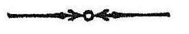

श्रीमन्महामाहेश्वराचार्याभिनवगुप्तविरचिते
श्रीजयरथकृत विवेकाख्यटीकोपेते
अथ
श्रीतन्त्रालोके

श्रीमन्महामाहेश्वराचार्याभिनवगुप्तविरचिते
श्रीजयरथकृत विवेकाख्यटीकोपेते

त्रयस्त्रिंशमाह्निकम् ।

परमानन्दसुधानिधिरुल्लसदपि बहिरशेषमिदम् ।
विश्रमयन्परमात्मनि विश्वेशो जयति विश्वेशः ॥
ननु इह एकैव विश्वामर्शनसारा संविद -
स्तीति उपास्योपासक भाव एव तावत् न न्या-
य्यः, तत्रापि उपास्यानां को भेदः, तत् किमिद-
मनेकचक्रात्मकत्वमुपदिष्टमित्याशङ्कां गर्भीकृत्य
द्वितीयार्धेन तदेकीकारमेव प्रणिगदितुमाह
अथावसरसंप्राप्त
एकीकारो निगद्यते ।
तमेव आह
यदुक्तं चक्रभेदेन
सार्धं पूज्यमिति त्रिकम् ।